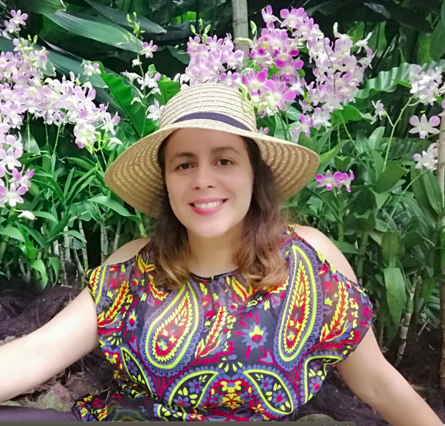

Yérali Gandica
ygandica@gmail.com
Assistant Professor
Laboratoire de Physique Théorique et Modélisation (LPTM).
Physics department & International Bachelor
CY Cergy Paris Université. Paris, 95000. France.
ORCID ID:
https://orcid.org/0000 - 0002 - 6262- 1801
twitter.com/ygandica
(Enseignant-Chercheur)
My main interest in research is the application of statistical and Critical Phenomena approaches to emergent social phenomena. The possibility of finding universal patterns, i.e, same qualitative behavior in different kind of phenomena. The similarity comes from the fact that collective emerging phenomena do not depend on the microscopic details of the process. The determinant properties are instead the symmetries, dimensionality, and conserved quantities. The theory implied on this methodology is the foundation for the field of Critical Phenomena, which has proved to be fruitful in allowing for the understanding of several patterns of universality.
The use of statistical methods has allowed for major advances in this area, by providing a bridge between the microscopic interactions and the large collective behavior of the system. My initial research activities were focused on agent based models. Making the analogy with social systems, is how I could see the emergent phenomena as a consequence of well-thought local rules among the interacting particles, which in the case of social phenomena are interacting human beings. After several works on this direction, I started with data science, as the only way for seeking what kind of patterns regarding human behavior is expressed by the data.


I got a PhD in Physics from the Venezuelan Institute for Research (IVIC). I spent 7 years of experience among 4 Postdoctoral positions in Europe. As a second background, I have complemented my PhD following several courses on Sociology (the first three years of this major). I have a broad experience working in computational social science, Big Data and network science among several interdisciplinary groups (in mathematics, finance, geography, engineering, biology, etc). CV upon request .
Short BIO
- 2012-2014. Postdoctoral Researcher. Center for Computational Physics. Department of Physics. Univ. Coimbra, Portugal.
- 2014-2016. Postdoctoral Researcher. Department of Mathematics and naXys. University of Namur, Belgium.
- 2016-2017. Postdoctoral Researcher. Department of Business. CeReFiM and naXys. University of Namur, Belgium.
- Jan 2018-Dec 2018. Associate Scientific Researcher. Center for Operations Research and Econometrics (CORE) & Institute of Information and Communication Technologies, Electronics and Applied Mathematics (ICTEAM). Université catholique de Louvain. Louvain-la-Neuve. Belgium.
- Jan 2019-April 2019. Visiting Fellow. Complexity Institute. Nanyang Technological University (NTU). Singapore.
- 2019-2022. Assistance Professor. Laboratoire de Physique Théorique et Modélisation (LPTM) - Physics department & International Bachelor. CY Cergy Paris Université. Paris, France.